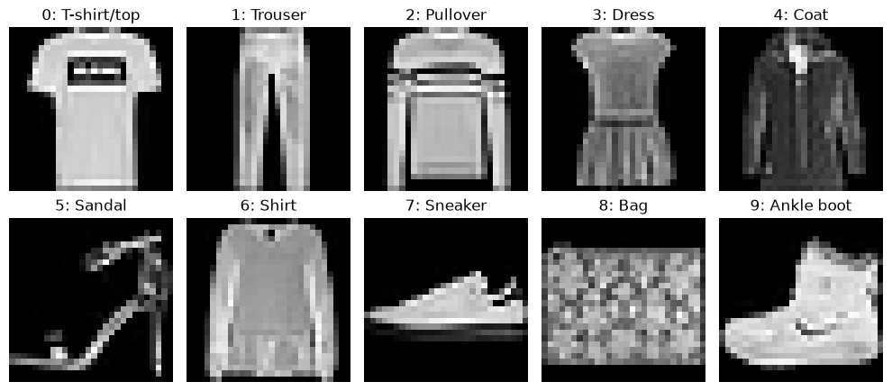

Datasets, data loaders, training and evaluation loops, and checkpoints in PyTorch, with an MLP on FashionMNIST.
PyTorch Training
This notebook trains a neural network to classify the FashionMNIST images with the standard PyTorch workflow:
datasets and data loaders, which serve the data in shuffled mini-batches;
the training loop and the evaluation loop;
checkpoints: saving and loading the weights;
a final test.
The model is an MLP: 784 pixels → 256 → 128 → 10 outputs. The notebook builds on the PyTorch Basics tutorial (tensors, autograd, nn.Module and optimizers).
Everything runs on a CPU. Training takes up to about a minute; the other cells take seconds.
Before you begin
Open this notebook in VS Code and select the cv Conda environment as the notebook kernel.
The notebook reads FashionMNIST from the course repository, so open it from your clone of the repository (in the tutorials folder), and run git pull first to get the latest files.
The notebook is designed to be run from top to bottom. If variables become inconsistent because cells were executed out of order, restart the kernel and use Run All.
FashionMNIST has 70,000 grayscale images of clothing, 28 × 28 pixels each, in 10 classes: 60,000 training images and 10,000 test images.
The course repository has the four data files in lectures/assets/datasets/fashion_mnist/. They are gzip-compressed IDX files: a short header followed by the raw bytes, one byte per pixel or label.
# The data folder, relative to the tutorials folderdata_dir = Path("../lectures/assets/datasets/fashion_mnist")ifnot data_dir.exists(): msg = ("FashionMNIST not found. Open this notebook from the tutorials folder ""of your clone of the course repository, and run git pull.")raiseFileNotFoundError(msg)for path insorted(data_dir.glob("*.gz")):print(f"{path.name:28s}{path.stat().st_size /1e6:5.1f} MB")
read_idx reads a file into a NumPy array of uint8, skipping the header (16 bytes for images, 8 for labels). images and labels turn the arrays into tensors: pixels as float32 scaled to 0–1, and labels as int64 (torch.long) class indices.
The images have shape (N, 28, 28), with no channel dimension; nn.Flatten turns each into a vector of 784 values. (Convolutional networks need the channel dimension, (N, 1, 28, 28), which X.unsqueeze(1) adds.)
The 10 classes, with the first training image of each:
fashion_names = ["T-shirt/top", "Trouser", "Pullover", "Dress", "Coat","Sandal", "Shirt", "Sneaker", "Bag", "Ankle boot"]fig, axes = plt.subplots(2, 5, figsize=(10, 4.5))for c, ax inenumerate(axes.flat): i = torch.where(y == c)[0][0] # index of the first image of class c ax.imshow(X[i], cmap="gray") ax.set_title(f"{c}: {fashion_names[c]}") ax.axis("off")plt.tight_layout()plt.show()

2. Training, validation and test sets
Training set: the first 50,000 training images; the model learns its weights from them.
Validation set: the last 10,000 training images; used for choices made during training, such as how long to train and which checkpoint to keep.
Test set: the 10,000 test images; used once, at the end, to report the final accuracy.
training: 50000
validation: 10000
test: 10000
training images per class:
tensor([4977, 5012, 4992, 4979, 4950, 5004, 5030, 5045, 5032, 4979])
torch.bincount counts how often each integer appears: the classes are balanced, with about 5,000 training images each.
3. Datasets
A dataset has a length and returns one sample, (image, label), for each index. TensorDataset makes a dataset from tensors that have the same first dimension.
For more control, write a class that subclasses Dataset and defines two methods:
__len__(): the number of samples;
__getitem__(i): sample i.
This is useful when samples are computed on the fly: read from disk one at a time, or changed randomly each time, as in data augmentation. The example below returns each image flipped left to right.
A DataLoader groups the samples of a dataset into mini-batches. For training, shuffle=True puts the samples in a new random order in every epoch (one pass through the training set). Validation and test sets need no shuffling, and can use larger batches, since no gradients are computed.
The MLP: nn.Flatten, then fully connected layers 784 → 256 → 128 → 10 with ReLU, trained with the cross-entropy loss and the Adam optimizer. make_model creates a new model with random weights; it is used again below.
def make_model():return nn.Sequential(nn.Flatten(), # 28 x 28 -> 784 nn.Linear(784, 256), nn.ReLU(), nn.Linear(256, 128), nn.ReLU(), nn.Linear(128, 10)).to(device) # 10 outputstorch.manual_seed(0)model = make_model()loss_fn = nn.CrossEntropyLoss() # softmax + cross-entropyoptimizer = torch.optim.Adam(model.parameters(), lr=1e-3)print(model)print(f"parameters: {sum(p.numel() for p in model.parameters()):,}")
A sanity check before training. The starting weights are small and random, so all 10 outputs \(z_i\) are close to 0 and the softmax gives each class a probability near 1/10. The loss should therefore be close to \(-\log(1/10) = \log 10 \approx 2.30\). A very different value points to a bug, for example in the labels or the loss.
with torch.no_grad(): loss = loss_fn(model(x_batch.to(device)), y_batch.to(device))print(f"loss before training: {loss.item():.3f} (log 10 = {np.log(10):.3f})")
loss before training: 2.305 (log 10 = 2.303)
6. The training loop
One epoch is one pass through the training loader. For each mini-batch: move the batch to the device, then the four steps from PyTorch Basics (forward pass and loss, zero_grad, backward, step).
The function also keeps running totals, to report the average loss and accuracy over the epoch. loss.item() is the average over the batch, so it is multiplied by the batch size before adding. The training accuracy is measured while the weights change during the epoch, so it is a slightly pessimistic estimate.
model.train() puts the model in training mode (Section 7 explains why).
def train_one_epoch(model, loader, loss_fn, optimizer): model.train() # training mode total_loss, correct, n =0.0, 0, 0for images, labels in loader: images, labels = images.to(device), labels.to(device) outputs = model(images) loss = loss_fn(outputs, labels) # forward pass and loss optimizer.zero_grad() loss.backward() # gradients (autodiff) optimizer.step() # update the weights total_loss += loss.item() *len(labels) correct += (outputs.argmax(1) == labels).sum().item() n +=len(labels)return total_loss / n, correct / n
7. The evaluation loop
Evaluation computes the loss and accuracy without changing the weights:
model.eval() puts the model in evaluation mode;
torch.no_grad() turns off gradient tracking, which saves time and memory.
Some layers, such as dropout and batch normalization, behave differently during training and evaluation; model.train() and model.eval() switch between the two behaviors. This MLP has no such layers, so here the calls change nothing, but always make them: a model that has such layers gives wrong results without them.
before training: validation loss 2.313, accuracy 8.6%
Evaluating in batches keeps the memory use bounded, which matters for large images and models. For 10,000 small images, a single call such as model(X_val) would also work.
8. Saving and loading weights
model.state_dict() is a dictionary from parameter names to tensors: everything needed to restore the model’s weights.
for name, tensor in model.state_dict().items():print(f"{name:10s}{tuple(tensor.shape)}")
torch.save writes it to a file (a checkpoint). To restore the weights, create a model with the same architecture and call load_state_dict with the result of torch.load.
checkpoint_dir = Path("checkpoints")checkpoint_dir.mkdir(exist_ok=True)torch.save(model.state_dict(), checkpoint_dir /"untrained.pt")model_copy = make_model() # different random weightsmodel_copy.load_state_dict(torch.load(checkpoint_dir /"untrained.pt"))x5 = X_val[:5].to(device)with torch.no_grad():print("same outputs:", torch.equal(model(x5), model_copy(x5)))
same outputs: True
To resume training later, save more than the weights: the optimizer has a state too (Adam keeps a running average for every weight), and the epoch number tells where to continue. A dictionary holds all three:
checkpoint = {"epoch": epoch,"model": model.state_dict(),"optimizer": optimizer.state_dict()}torch.save(checkpoint, path)# Later: restore and continue from epoch + 1checkpoint = torch.load(path)model.load_state_dict(checkpoint["model"])optimizer.load_state_dict(checkpoint["optimizer"])start_epoch = checkpoint["epoch"] +1
9. Training
Train a new model for 10 epochs. After each epoch, evaluate it on the validation set and save two checkpoints:
last.pt: the full checkpoint (epoch, model and optimizer), to resume training;
best.pt: the weights with the best validation accuracy so far, to use at the end.
epoch 1: train loss 0.544, acc 80.5% | val loss 0.415, acc 85.0% | 2.1 s saved best.pt
epoch 2: train loss 0.375, acc 86.3% | val loss 0.402, acc 85.8% | 2.3 s saved best.pt
epoch 3: train loss 0.338, acc 87.6% | val loss 0.341, acc 87.5% | 1.9 s saved best.pt
epoch 4: train loss 0.312, acc 88.5% | val loss 0.335, acc 88.2% | 2.2 s saved best.pt
epoch 5: train loss 0.294, acc 89.1% | val loss 0.344, acc 87.4% | 2.5 s
epoch 6: train loss 0.276, acc 89.7% | val loss 0.336, acc 88.0% | 2.0 s
epoch 7: train loss 0.262, acc 90.1% | val loss 0.369, acc 87.4% | 2.2 s
epoch 8: train loss 0.251, acc 90.6% | val loss 0.323, acc 88.7% | 2.3 s saved best.pt
epoch 9: train loss 0.242, acc 91.0% | val loss 0.304, acc 89.3% | 2.2 s saved best.pt
epoch 10: train loss 0.230, acc 91.3% | val loss 0.319, acc 88.6% | 2.3 s
total training time: 22 s
10. Training curves
Plot the loss and the accuracy against the epoch, for the training and the validation sets.
The training loss keeps going down. The validation loss drops quickly in the first epochs, then goes up and down around a level, and the gap between the two grows: the model starts to fit details of the training images that do not carry over to new images (overfitting). This is why the checkpoint is chosen with the validation set, not the training set.
11. Test accuracy, once
Load the best checkpoint into a new model and evaluate it on the test set. The test set was not used for any choice, so its accuracy estimates the accuracy on new images.
Restore weights into a model of the same architecture
torch.bincount
Count how often each integer appears
torch.where(condition)[0]
Indices where a condition holds
time.perf_counter()
Measure run time
Practice Exercises
The exercises use the data, the loaders, make_model, train_one_epoch, evaluate and the checkpoints from the notebook, so run it first. Each exercise that trains a model takes up to about a minute on a CPU.
1. A dataset that scales on the fly
raw_images holds the training images as uint8 (0–255). Write a Dataset class that stores raw_images and y_train and returns each image as float32 scaled to 0–1. Check that its first sample matches train_set[0] (use torch.allclose), and that a DataLoader over it gives batches of shape (64, 28, 28). Why can storing uint8 help with a large dataset?
raw = read_idx("train-images-idx3-ubyte.gz", 16).reshape(-1, 28, 28)raw_images = torch.tensor(raw[:50000]) # uint8, 0 to 255# Your code here
2. Batches per epoch
For batch sizes 32, 64 and 256, print the number of batches in an epoch of train_set and the size of the last batch, with and without drop_last=True.
# Your code here
3. Overfit one batch
Take one batch of 64 training images. Train a new model (make_model(), Adam with lr=1e-3) on this batch only, for 200 steps, and print the loss every 50 steps and the final accuracy on the batch. A network should fit 64 images almost perfectly; if it can’t, the code has a bug. Why is this a useful check before a long training run?
# Your code here
4. Learning rate
For lr = 1e-4, 1e-3 and 1e-2, train a new model with Adam for 2 epochs (call torch.manual_seed(0) before make_model() each time) and print the validation accuracy after each epoch. Which learning rate works best here?
# Your code here
5. Batch size
Train a new model for 1 epoch with batch size 16 and another with batch size 256 (same learning rate, 1e-3). Compare the time per epoch, the number of weight updates and the validation accuracy.
# Your code here
6. Model size
Build an MLP with one wider hidden layer: nn.Flatten(), then 784 → 512 → 10 with ReLU. Compare its number of parameters with the MLP of the notebook, then train each for 2 epochs and compare their validation accuracy.
# Your code here
7. Resume training
Load checkpoints/last.pt, saved in Section 9. Create a new model and an Adam optimizer, load both of their states from the checkpoint, and train for 2 more epochs (epochs 11 and 12). Print the validation accuracy after each epoch.
# Your code here
8. Confusion matrix
Use pred and y_test from Section 11 to compute the 10 × 10 confusion matrix: entry [t, p] counts the test images of true class t predicted as class p. Show it with plt.imshow, with the class names as tick labels. Which pair of different classes is confused most often?
Train a new model on the first 5,000 training images only, for 20 epochs, and plot its training and validation accuracy against the epoch. Compare the curves with those in Section 10: what changes when the training set is small?
# Your code here
Additional reference
PyTorch tutorials on datasets and data loaders, the training loop, and saving and loading models:
When training gives strange results, check the basics first: the shapes and the value ranges of a batch, the loss before training (about \(\log 10\) for 10 classes), and whether the model can overfit one batch.